Week 12
Composites
COMPOSITES MATERIALS
Assignment: Design and make a 3D mold, and produce a fiber composite part in it.
composites/index.html MATERIALS:
- Polyurethane (60x80x10cm).
- Epoxy Resin Part A (Super Sap)
- Hardener Part B (Super Sap)
- Mold Release (High-Temp)
- Gelcoat GC 253 PA 253 PA White SZ for epox (Resintex)
- Linen fabric
- Peel ply
- Bleeder (Perforated plastic red)
- Felt.
TOOLS:
-Machine CNC Enterprise
: work Area (XxY): 2100 x 1100 mm;
-Endmill 8 mm
-Ballmill 3.2 mm
-Mask
-Screws
-Glasses
-Screwdriver
-Gloves
-Headphones
-Vacuum cleaner
-Motion sensors
3D MODEL:
Even for this modeling activity I chose to use Rhinoceros, I did not have much time to experiment with other softwares.
After drawing 3D model, I exported the file in Stl.
P.S.: Make sure it is in the box -x + y axis with the origin point 0.0. Export the model as Stl.
This precaution is not necessary for all the CNC machines, but exclusively for the one present in Fablab Frosinone, because, due to lack of space, the machine was assembled with reversed axes.
After you export the file in Stl, import it with MeshCAM software that will generate the G-code.
The first phase is the construction and the preparation of the mold.
We used a block of polyurethane 60x80x10cm, however we chose to draw a pattern of smaller dimensions (50x70x6), to avoid technical problems later.
Caution:
- Do not create negative angles, you must be able to remove the "piece" from the mold;
- Do not draw too vertical inside edges: you need to consider the size of the mandrel and its armor. If the surface to be milled is very deep, the angle must be wider.
ROUGHING:
- MeshCAM will generate the G-code.
- endmill = 8 mm
- feed rate : 1100
- plunge: 500
- spindle speed: 12000
- depth per pass: 4 mm
Roughing is a fundamental process, because it removes unnecessary parts from raw material . This operation is used to prepare the material for processing and finishing.
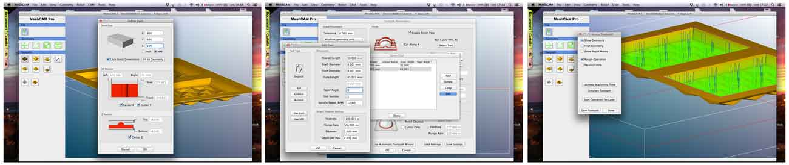 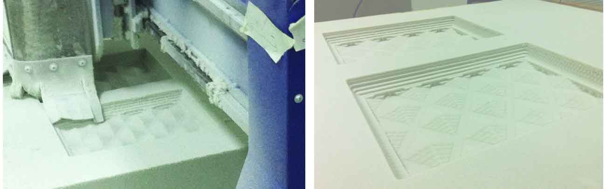FINISHING:
- MeshCAM will generate the G-code.
- ballmill = 3.2 mm
- feedrate: 1100 mm
- plunge: 500 mm
- spindle speed: 12000 rpm
- depth per pass 1 mm
The finishing phase allows to eliminate the last imperfections still present on the milled object.
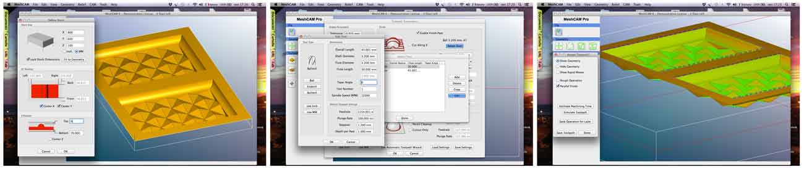 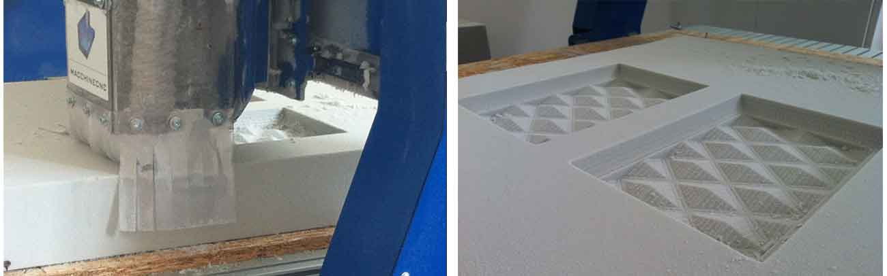Roughing took 3 hours of processing, the finishing took 2 hours and a half.
Enterprise Machine
CLEANING:
I aspirated the waste material coming from the milling.
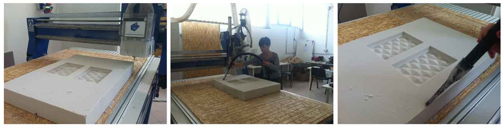SMOOTHING:
After milling, I had to smooth the mold with sandpaper to eliminate remaining impurities.

PREPARATION MOLD:
1) I solidified surface with a mixture (2: 1 ratio) EpoxiResina Part A - Hardener Part B (CATALYST), to prepare the surface to lamination.
I had to make two layers, waiting time: 2 hours per layer
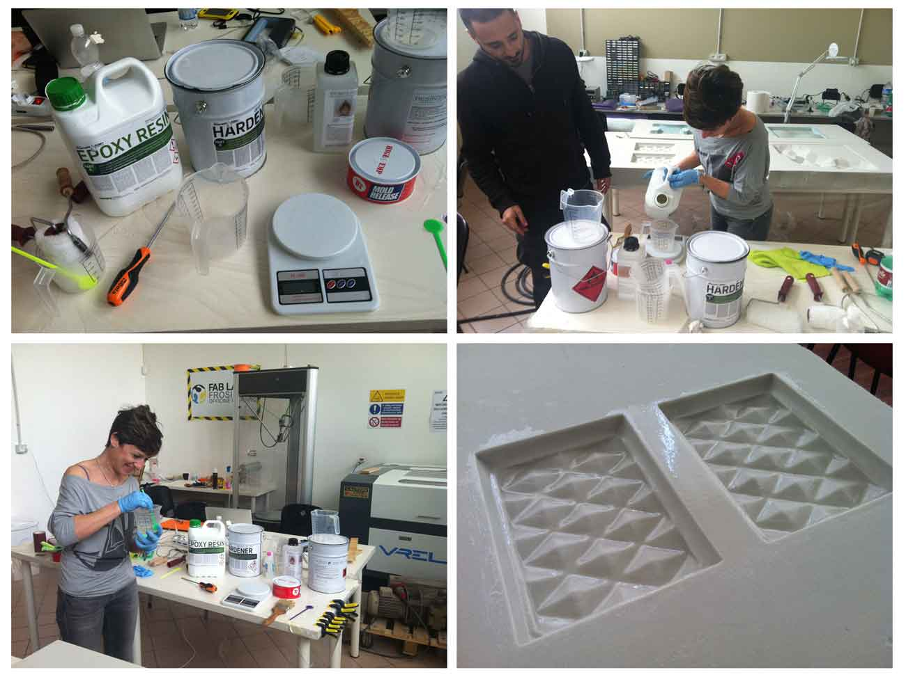2) I coated the releasing wax (Mold Release) 5 times every 30 minutes.
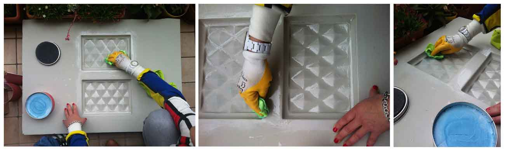3) I smeared gelcoat (Gel-hardener 2% by weight) over the mold, twice, without waiting for the first layer was dry.
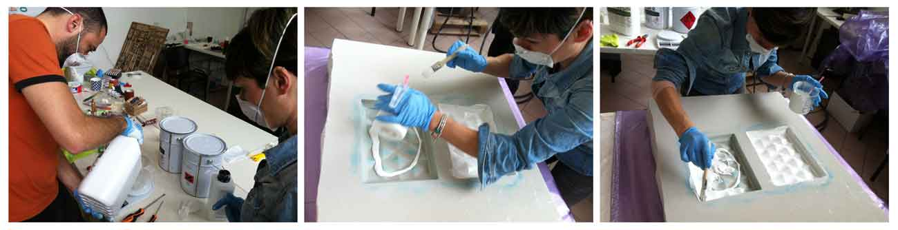4) I cut 6 layers of the same size: 3 linen fabric, 1 Peel ply, 1 bleeder, 1 felt.
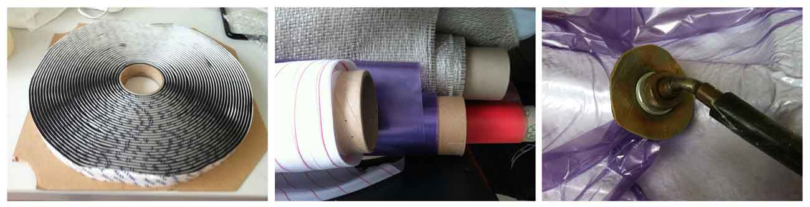5) I prepared the resin to be spread over the three layers of linen fabric (300g / sqm ratio).
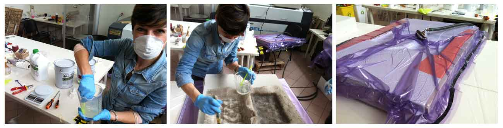6) I placed the resin on the three layers of fabric, then I covered the fabric with Peel ply Bleeder (Perforated plastic red) and Felt.
7) I Put the Mold with all fabric layers in the Vacuum Bag.
UNPACKING:
8) After 4 hours under pressure, and 24h in the Vacuum Bag, I could remove the model from the mold
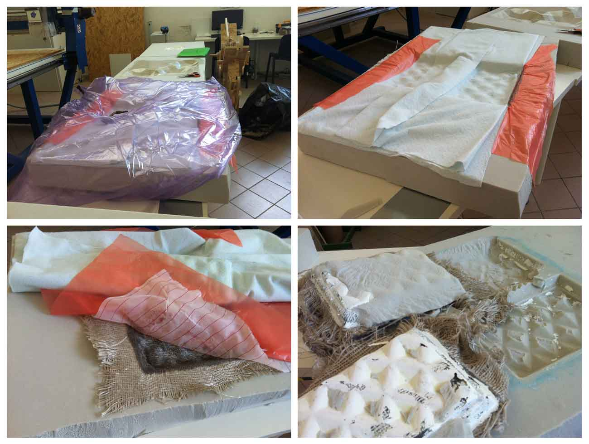9) The mold has not come out at best, for which it was necessary to sandpaper it again.
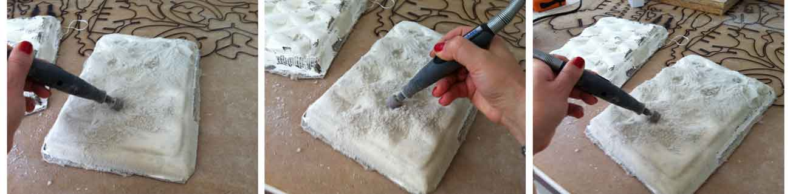 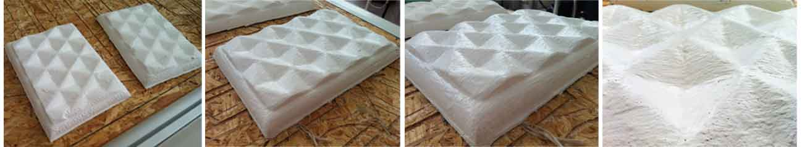The outcome is a decorative panel.
I did not like this exercise. There were too many dead times and a lot of waste material.